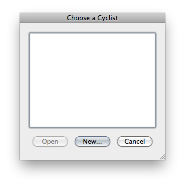
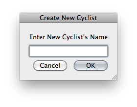
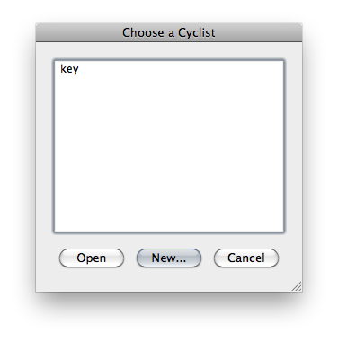
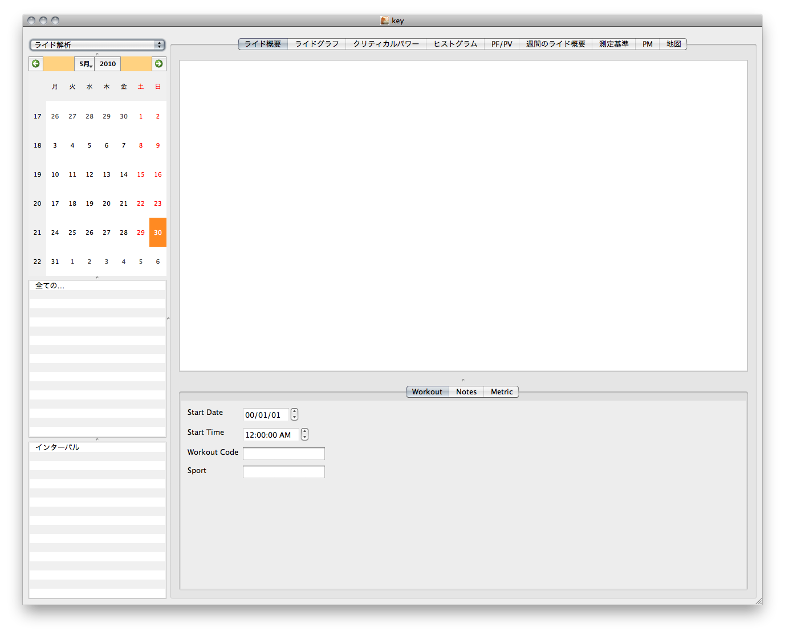
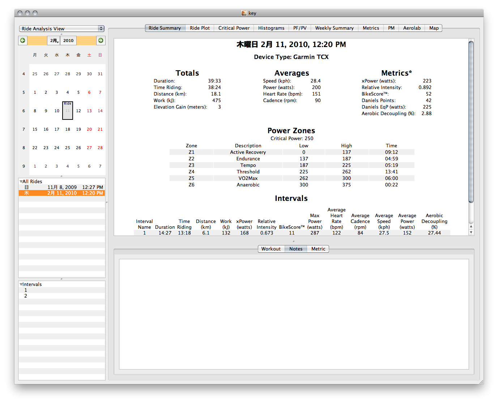
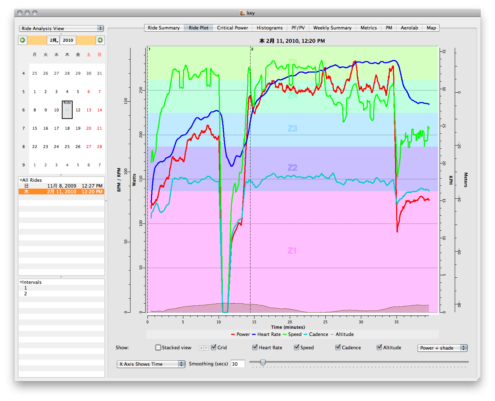
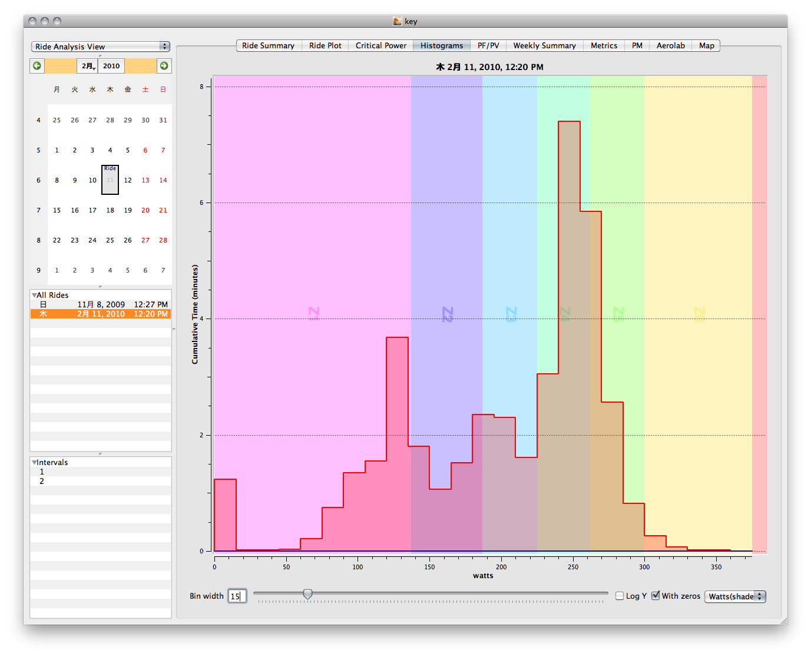
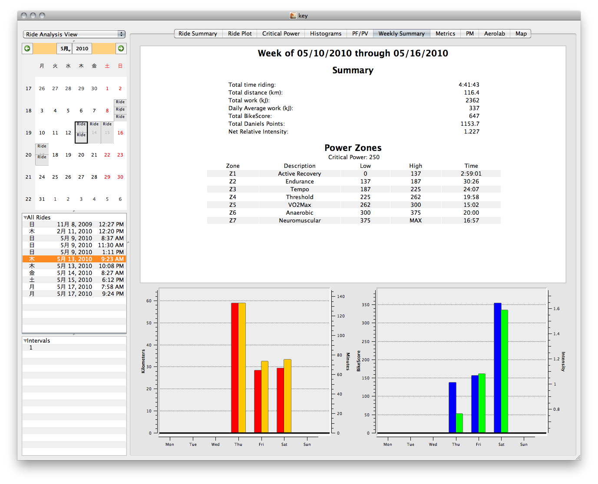
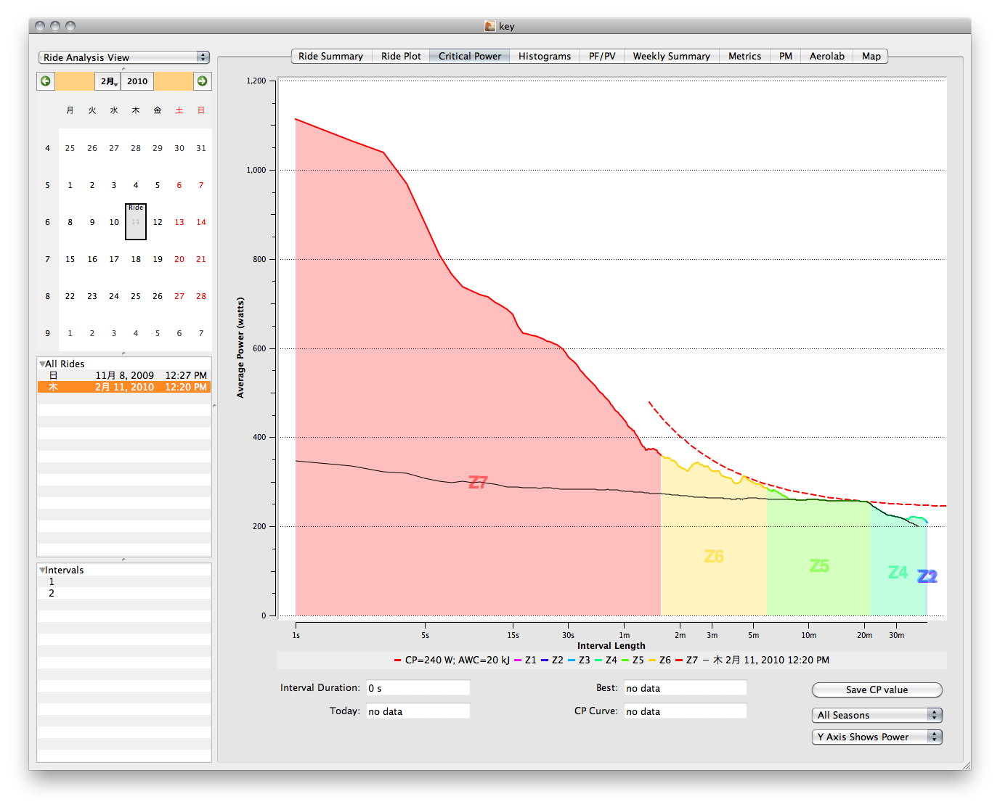

使い方¶
はじめの一歩¶
MacOSX上でGoldenCheetahを起動するにはアプリケーションフォルダを開き、GoldenCheetahアイコンをダブルクリックしてください。Linux上でGoldenCheetahを起動するにはコマンドラインから GoldenCheetah とタイプしてください。
最初にGoldenCheetahを起動すると、 “Choose a Cyclist” ダイアログが表示されます。:
“New...” をクリックして任意の名前を入力してください。:
次に、サイクリストを選択（さきほど入力したサイクリスト名がダイアログに表示されているはずですね？）してから “Open” ボタンをクリックするとGoldenCheetahのメインウィンドウが開きます。
 メインウィンドウにはもちろん ライド [1] は存在しません。 ライドはCycleOps CervoやSRM PowerControlなどサイクルコンピューターからの直接ダウンロード、他のトレーニングツールの保存データを取り込むことで作成されます。 また、不幸にも何らかのトラブルでデータが保存されていない場合には、手動でトレーニング時間や距離を入力することでBikeScore / DanielsPointを推定することも出来ます。 [2]
ライドデータのダウンロード/取り込み¶
デバイスからデータを直接ダウンロードするには Ride メニューから Download from device... を選択します。
- Saris CycleOps Cervo
- SRM Power Control
ファイルを取り込むには Ride メニューから Import from file... を選択します。GoldenCheetahは以下のファイル形式に対応しています。
- TrainingPeaks
- WKO+ v2 / v3
- Garmin
- Garmin TCXファイル
- Garmin FITファイル
- CycleOps
- PowerAgent CSVファイル
- Polar
- srdファイル
- SRM PowerMeter
- srmファイル
ライドをダウンロードするか取り込みを行うと、 “Ride Summary” ページで乗車時間や平均出力などの、シンプルな統計を見ることが出来ます。 また、 “Notes” タブではライドのメモを記録することが出来ます。
メインウィンドウ以外の使い方¶
ウィンドウ上部の “Ride Plot” タブをクリックすると、ライド全体の速度、出力、ケイデンス、心拍数、標高などのグラフを見ることが出来ます。
“Histgrams” タブは、どのような出力域で、どのくらいの時間走行したか確認できます。
“Weekly Summary” では、選択したライドの統計を見ることが出来ます。
“Critical Power Plot” はGoldenCheetahの便利な機能の一つです。これは、保存されているライドの各インターバルで、最も高い平均出力を表示します。 “Mean Maximal Power Graph” として知っている方もいるでしょう。緑色の線は選択中のライドの、赤い線は全体のライドの出力です(もしライドが一つしか登録されていなければ、二つの線は重なって表示されます)。グラフをクリックすると青い線が表示され、クリックした部分のインターバル長や出力がウィンドウの下部に表示されます。
次のような考察の助けになるでしょう。:
Critical Power Plot は、インターバル練習やタイムトライアルを行う際にとても役に立ちます。あなたが2分インターバル（3分REST)を6本行なおうとしたとします。 Critical Power Plot のグラフをクリックし、ウィンドウ下部の “Interval Duration “ が2分になるようにドラッグし、 “Best” の値を読みましょう。その値が、あなたの過去に行った最もハードなインターバルトレーニングの出力です。さあ頑張って！
| [1] | GoldenCheetahでは個々のトレーニングログを ライド と呼びます。 |
| [2] | トレーニングのログとしては不完全なものですが、短期、長期のトレーニングストレスやストレスバランスを算出するには有用でしょう。少なくとも、ライドに穴が空いて、計算できないよりはるかにマシといえます。 |